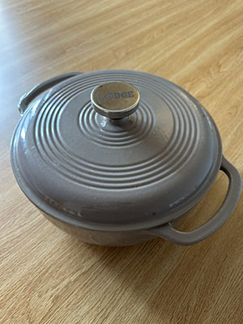
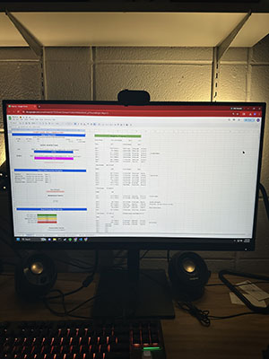
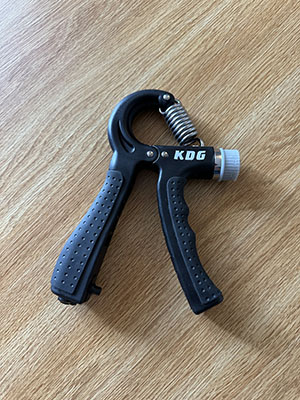
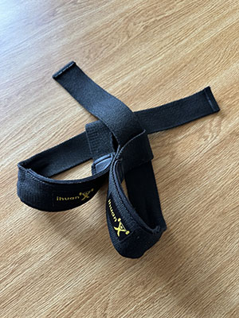
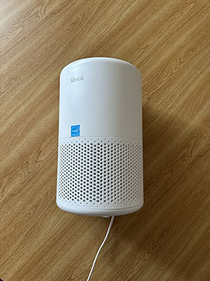
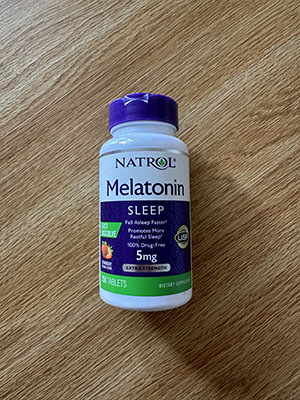
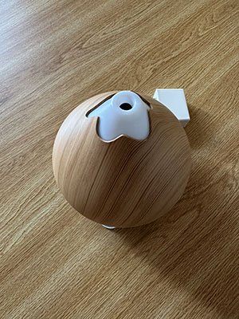

Welcome to the Weight Loss & Nutrition Inventory. While my primary reviews focus on the specific pros, cons, and uses of individual items like the Lodge Dutch Oven and the Taylor Digital Kitchen Scale, it is equally important to understand the broader ecosystem of physical items required for a successful fitness and diet journey. This inventory gathers various items integral to weight loss to illustrate exactly what it takes to maintain consistency when trying to lose weight.
When it comes to losing weight, there are 3 components that must work together in order to maintain a healthy, consistent weight loss: eating, working out, and sleep. More specifically, you must track your calories consistently to ensure that you are eating the right macronutrients each day. It is also important to work out and stay active so that you are burning the calories necessary to lose fat. Lastly, it is important to sleep a sufficient amount (7-9 hours) each day so that your body has time to recover from the day.
As you move through this gallery, you will see how these three forces intersect. Weight loss is not a math problem to be solved; it is a biological system to be balanced.
Nutrition is the most significant lever in weight management. It isn't just about "eating less"—it’s about managing the metabolic cost of your fuel. At its simplest, weight loss requires a caloric deficit, but the quality of those calories determines if you lose fat or muscle. What you eat dictates insulin response, which acts as the "master switch" for fat storage or fat burning.




| Item | Age | Use-Case | Primary Benefit |
|---|---|---|---|
| Crockpot | 1 Year | Meal-Prepping | Easy Meals |
| Scale | 10 Months | Food Weighing | Tracking Accuracy |
| Pan | 3 Years | Searing/Prepping | Cooking Tool Alternative |
| Macro Sheet | 4 Weeks | Calorie Tracking | Progressive Weight Loss |
If food is the fuel, exercise is the engine's tuning. While you cannot "out-run a bad diet," physical activity ensures that your body remains a high-functioning machine. Strength training signals to your body that it needs to keep its muscle tissue, forcing it to burn stored fat for energy instead. Intense movement increases your Basal Metabolic Rate (BMR), meaning you burn more energy even when you are standing still.



| Item | Age | Use-Case | Primary Benefit |
|---|---|---|---|
| Jump Rope | 5 Years | Cardio | Burning Calories |
| Grip Trainer | 4 Years | Strength Training | Improving Grip Strength |
| Yoga Mat | 6 Years | Body-Weight Exercise | Burning Calories |
| Lifting Straps | 3 Years | Enable Lifting Heavy | Prevent Grip Problems |
Often overlooked, sleep is the "glue" that holds the other two pillars together. Without adequate rest, your efforts in the kitchen and the gym are largely neutralized. Sleep deprivation spikes ghrelin (the hunger hormone) and crashes leptin (the fullness hormone), making dietary discipline nearly impossible. Essential fat-burning hormones, such as Human Growth Hormone (HGH), are primarily released during deep sleep cycles.




| Item | Age | Use-Case | Primary Benefit |
|---|---|---|---|
| Air Purifier | 3 Years | Improved Air | Air Quality for Sleep |
| Melatonin | 4 Months | Prevents Insomnia | Improved Sleep |
| Weighted Blanket | 1 Year | Better Sleep | Deep Pressure Stimulation |
| Water Diffuser | 3 Years | Water Diffusal | Prevents Dry Nose |